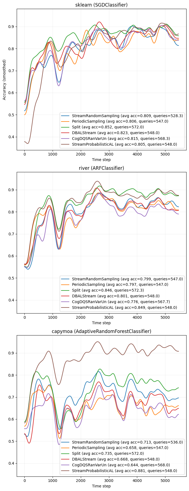
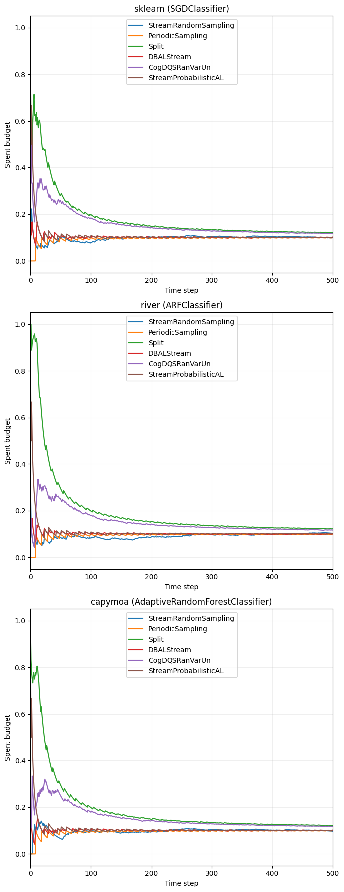

Stream-based Active Learning - Getting Started with sklearn, River, and CapyMOA#
Google Colab Note: If the notebook fails to run after installing the needed packages, try to restart the runtime (Ctrl + M) under Runtime -> Restart session.

Notebook Dependencies
Uncomment the following cells to install all dependencies for this tutorial.
[1]:
# !pip install scikit-activeml[opt] torch torchvision datasets sentence_transformers
In this notebook, we compare stream-based active learning strategies on the Reuters-21578 text stream. The same query strategies are evaluated with three compatible classifier backends: a scikit-learn incremental model wrapped by SklearnClassifier, a river model wrapped by RiverClassifier, and a CapyMOA model wrapped by CapyMOAClassifier.
[2]:
import numpy as np
import torch
import warnings
import matplotlib as mpl
import matplotlib.pyplot as plt
from collections import deque
from datasets import load_dataset
from scipy.ndimage import gaussian_filter1d
from sentence_transformers import SentenceTransformer
from sklearn.linear_model import SGDClassifier
from skactiveml.classifier import (
SklearnClassifier,
RiverClassifier,
CapyMOAClassifier,
)
from skactiveml.stream import StreamRandomSampling, PeriodicSampling
from skactiveml.stream import (
Split,
StreamProbabilisticAL,
StreamDensityBasedAL,
CognitiveDualQueryStrategyRanVarUn,
)
from skactiveml.utils import call_func
from river.forest import ARFClassifier
from capymoa.classifier import AdaptiveRandomForestClassifier
from tqdm import tqdm
# Define the device depending on its availability.
device = "cuda" if torch.cuda.is_available() else "cpu"
mpl.rcParams["figure.facecolor"] = "white"
warnings.filterwarnings("ignore")
Initialize Stream Parameters#
Before the experiments can start, we define the parameters for the Reuters stream. We specify the number of initially labeled samples (init_train_length), the size of the sliding window used by stream query strategies (training_size), and a configurable stream_length so the notebook remains runnable while still using the Reuters-21578 text stream. We also set the number of repetitions per classifier and query strategy.
[3]:
# number of initially labeled samples
init_train_length = 10
# the size of the sliding window that limits the stored stream history
training_size = 3000
# set to None to use the full Reuters stream after the initial samples
stream_length = 5475
# number of independent repetitions per classifier / query strategy pair
n_repeats = 3
Random Seed Generation#
To make the experiments repeatable, we use one random_state object to generate all other random seeds. The get_randomseed helper keeps the factories reproducible while ensuring that every classifier and query strategy instance starts with fresh state.
[4]:
# random state that is used to generate random seeds
random_state = np.random.RandomState(0)
def get_randomseed(random_state):
return random_state.randint(2**31 - 1)
Data Set#
The code loads the Reuters-21578 training split from Hugging Face and embeds all documents with a SentenceTransformer. The resulting embeddings are stored in X, while the corresponding class labels are stored in y. The first init_train_length samples form the initial labeled training subset (X_init, y_init), and the remaining samples define the stream (X_stream, y_stream). If stream_length is not None, the stream is truncated to keep the comparison between the
three classifier backends manageable.
[5]:
# Load Reuters from Hugging Face and encode the documents via
# `sentence_transformers`.
ds_train = load_dataset("yangwang825/reuters-21578", split="train")
mdl = SentenceTransformer("all-MiniLM-L6-v2", device=device)
X = mdl.encode(ds_train["text"])
y = np.asarray(ds_train["label"], dtype=np.int64)
classes = np.unique(y)
X_init = X[:init_train_length, :]
y_init = y[:init_train_length]
X_stream = X[init_train_length:, :]
y_stream = y[init_train_length:]
if stream_length is not None:
X_stream = X_stream[:stream_length]
y_stream = y_stream[:stream_length]
BertModel LOAD REPORT from: sentence-transformers/all-MiniLM-L6-v2
Key | Status | |
------------------------+------------+--+-
embeddings.position_ids | UNEXPECTED | |
Notes:
- UNEXPECTED: can be ignored when loading from different task/architecture; not ok if you expect identical arch.
Classifier and Query Strategies#
The notebook uses factory functions so every run starts with fresh objects instead of reusing stale state. clf_factories defines the three backends compared in this tutorial, while qs_factories creates the stream-based active learning strategies evaluated for each backend. This setup keeps the Reuters stream fixed while changing only the classifier implementation.
[6]:
clf_factories = {
"sklearn": lambda: SklearnClassifier(
SGDClassifier(
loss="log_loss",
random_state=get_randomseed(random_state),
),
classes=classes,
random_state=get_randomseed(random_state),
),
"river": lambda: RiverClassifier(
ARFClassifier(seed=get_randomseed(random_state)),
classes=classes,
random_state=get_randomseed(random_state),
),
"capymoa": lambda: CapyMOAClassifier(
estimator_class=AdaptiveRandomForestClassifier,
classes=classes,
random_state=get_randomseed(random_state),
),
}
qs_factories = {
"StreamRandomSampling": lambda: StreamRandomSampling(
random_state=get_randomseed(random_state)
),
"PeriodicSampling": lambda: PeriodicSampling(
random_state=get_randomseed(random_state)
),
"Split": lambda: Split(
random_state=get_randomseed(random_state)
),
"DBALStream": lambda: StreamDensityBasedAL(
random_state=get_randomseed(random_state)
),
"CogDQSRanVarUn": lambda: CognitiveDualQueryStrategyRanVarUn(
random_state=get_randomseed(random_state),
force_full_budget=True,
),
"StreamProbabilisticAL": lambda: StreamProbabilisticAL(
random_state=get_randomseed(random_state),
metric="rbf",
),
}
Active Learning Cycle#
Once the Reuters embeddings, classifier factories, and query strategy factories are ready, we can start the experiment. The outer loop iterates over the three classifier backends, the middle loop iterates over the query strategies, and the innermost loop performs repeated runs. Each run starts with the same initial labeled subset, predicts every incoming stream instance, lets the query strategy decide whether to acquire the label, and updates the classifier only when a label is queried. The results are stored per classifier and per query strategy so that we can later aggregate the learning curves across repeats.
[7]:
results = {
clf_name: {} for clf_name in clf_factories
}
for clf_name, clf_factory in clf_factories.items():
for qs_name, qs_factory in qs_factories.items():
all_correct_classifications = []
all_counts = []
all_queries = []
print(f"{clf_name} - {qs_name}")
for r in range(n_repeats):
clf = clf_factory()
qs = qs_factory()
# initialize the stored stream history for the query strategies
X_train = deque(maxlen=training_size)
X_train.extend(X_init)
y_train = deque(maxlen=training_size)
y_train.extend(y_init)
# initialize the classifier on the initially labeled documents
clf.partial_fit(X_init, y_init)
correct_classifications = []
count = 0
queries = []
iterator = zip(X_stream, y_stream)
for x_t, y_t in tqdm(iterator, total=len(X_stream)):
X_cand = x_t.reshape(1, -1)
y_cand = y_t
correct_classifications.append(
clf.predict(X_cand)[0] == y_cand
)
sampled_indices, utilities = call_func(
qs.query,
candidates=X_cand,
X=np.asarray(X_train),
y=np.asarray(y_train),
clf=clf,
return_utilities=True,
fit_clf=False,
)
budget_manager_param_dict = {"utilities": utilities}
call_func(
qs.update,
candidates=X_cand,
queried_indices=sampled_indices,
budget_manager_param_dict=budget_manager_param_dict,
)
queried = len(sampled_indices) > 0
queries.append(float(queried))
if queried:
count += len(sampled_indices)
clf.partial_fit(X_cand, np.array([y_cand]))
X_train.append(x_t)
y_train.append(
y_cand if queried else clf.missing_label
)
all_correct_classifications.append(correct_classifications)
all_counts.append(count)
all_queries.append(queries)
results[clf_name][qs_name] = {
"correct": np.asarray(all_correct_classifications, dtype=float),
"counts": np.asarray(all_counts, dtype=int),
"queried": np.asarray(all_queries, dtype=float),
}
sklearn - StreamRandomSampling
100%|██████████| 5475/5475 [00:07<00:00, 695.15it/s]
100%|██████████| 5475/5475 [00:08<00:00, 683.95it/s]
100%|██████████| 5475/5475 [00:07<00:00, 684.72it/s]
sklearn - PeriodicSampling
100%|██████████| 5475/5475 [00:07<00:00, 694.15it/s]
100%|██████████| 5475/5475 [00:07<00:00, 728.12it/s]
100%|██████████| 5475/5475 [00:07<00:00, 712.05it/s]
sklearn - Split
100%|██████████| 5475/5475 [00:10<00:00, 507.33it/s]
100%|██████████| 5475/5475 [00:10<00:00, 499.67it/s]
100%|██████████| 5475/5475 [00:10<00:00, 522.21it/s]
sklearn - DBALStream
100%|██████████| 5475/5475 [00:12<00:00, 422.37it/s]
100%|██████████| 5475/5475 [00:12<00:00, 427.15it/s]
100%|██████████| 5475/5475 [00:12<00:00, 424.14it/s]
sklearn - CogDQSRanVarUn
100%|██████████| 5475/5475 [00:12<00:00, 434.81it/s]
100%|██████████| 5475/5475 [00:13<00:00, 412.10it/s]
100%|██████████| 5475/5475 [00:12<00:00, 435.89it/s]
sklearn - StreamProbabilisticAL
100%|██████████| 5475/5475 [00:37<00:00, 147.61it/s]
100%|██████████| 5475/5475 [00:36<00:00, 150.81it/s]
100%|██████████| 5475/5475 [00:35<00:00, 154.64it/s]
river - StreamRandomSampling
100%|██████████| 5475/5475 [00:14<00:00, 365.57it/s]
100%|██████████| 5475/5475 [00:15<00:00, 347.75it/s]
100%|██████████| 5475/5475 [00:16<00:00, 327.18it/s]
river - PeriodicSampling
100%|██████████| 5475/5475 [00:15<00:00, 357.39it/s]
100%|██████████| 5475/5475 [00:16<00:00, 338.26it/s]
100%|██████████| 5475/5475 [00:15<00:00, 345.01it/s]
river - Split
100%|██████████| 5475/5475 [00:25<00:00, 212.67it/s]
100%|██████████| 5475/5475 [00:25<00:00, 216.23it/s]
100%|██████████| 5475/5475 [00:26<00:00, 208.29it/s]
river - DBALStream
100%|██████████| 5475/5475 [00:26<00:00, 204.47it/s]
100%|██████████| 5475/5475 [00:26<00:00, 203.50it/s]
100%|██████████| 5475/5475 [00:26<00:00, 207.85it/s]
river - CogDQSRanVarUn
100%|██████████| 5475/5475 [00:25<00:00, 214.06it/s]
100%|██████████| 5475/5475 [00:23<00:00, 235.02it/s]
100%|██████████| 5475/5475 [00:25<00:00, 215.90it/s]
river - StreamProbabilisticAL
100%|██████████| 5475/5475 [00:54<00:00, 101.17it/s]
100%|██████████| 5475/5475 [00:58<00:00, 94.09it/s]
100%|██████████| 5475/5475 [00:53<00:00, 102.31it/s]
capymoa - StreamRandomSampling
100%|██████████| 5475/5475 [00:45<00:00, 121.15it/s]
100%|██████████| 5475/5475 [00:40<00:00, 135.62it/s]
100%|██████████| 5475/5475 [00:44<00:00, 122.82it/s]
capymoa - PeriodicSampling
100%|██████████| 5475/5475 [00:48<00:00, 113.57it/s]
100%|██████████| 5475/5475 [00:40<00:00, 134.39it/s]
100%|██████████| 5475/5475 [00:45<00:00, 120.66it/s]
capymoa - Split
100%|██████████| 5475/5475 [01:11<00:00, 76.67it/s]
100%|██████████| 5475/5475 [01:09<00:00, 79.02it/s]
100%|██████████| 5475/5475 [00:57<00:00, 95.77it/s]
capymoa - DBALStream
100%|██████████| 5475/5475 [01:01<00:00, 89.50it/s]
100%|██████████| 5475/5475 [00:51<00:00, 105.71it/s]
100%|██████████| 5475/5475 [00:56<00:00, 96.51it/s]
capymoa - CogDQSRanVarUn
100%|██████████| 5475/5475 [00:50<00:00, 108.77it/s]
100%|██████████| 5475/5475 [00:48<00:00, 112.05it/s]
100%|██████████| 5475/5475 [00:46<00:00, 118.31it/s]
capymoa - StreamProbabilisticAL
100%|██████████| 5475/5475 [01:21<00:00, 67.28it/s]
100%|██████████| 5475/5475 [01:23<00:00, 65.58it/s]
100%|██████████| 5475/5475 [01:21<00:00, 67.40it/s]
Active Learning Results#
The first plot aggregates the repeat-wise accuracy results and shows one learning-curve panel per classifier backend. Within each panel, every query strategy is plotted with the same smoothing and legend style so that the classifiers can be compared side by side on the same Reuters stream. The legend reports both the average accuracy and the average number of acquired labels.
[8]:
clf_titles = {
"sklearn": "sklearn (SGDClassifier)",
"river": "river (ARFClassifier)",
"capymoa": "capymoa (AdaptiveRandomForestClassifier)",
}
colormap = mpl.colormaps["tab10"]
fig, axs = plt.subplots(
nrows=len(clf_factories),
ncols=1,
figsize=(7, 18),
sharey=True
)
axs = np.atleast_1d(axs)
for ax, (clf_name, clf_results) in zip(axs, results.items()):
for i_qs, (qs_name, res) in enumerate(clf_results.items()):
color = colormap(i_qs % colormap.N)
correct = res["correct"]
mean_curve = correct.mean(axis=0)
smoothed = gaussian_filter1d(mean_curve, 100)
avg_acc = mean_curve.mean()
avg_count = res["counts"].mean()
ax.plot(
smoothed,
color=color,
label=(
f"{qs_name} (avg acc={avg_acc:.3f}, "
f"queries={avg_count:.1f})"
),
)
ax.set_title(clf_titles[clf_name])
ax.set_xlabel("Time step")
ax.grid(alpha=0.2)
ax.legend(loc="lower right")
axs[0].set_ylabel("Accuracy (smoothed)")
plt.tight_layout()

Budget Overview#
To complement the learning curves, we also track how much of the labeling budget is spent over time. For each run, the notebook stores whether a label was queried at each time step and converts that binary sequence into a cumulative budget curve. The plot below shows the mean spent budget per query strategy, again split into separate panels for the three classifier backends.
[12]:
fig, axs = plt.subplots(len(clf_factories), 1, figsize=(7, 18), sharey=True)
axs = np.atleast_1d(axs)
for ax, (clf_name, clf_results) in zip(axs, results.items()):
for i_qs, (qs_name, res) in enumerate(clf_results.items()):
color = colormap(i_qs % colormap.N)
queries = res["queried"]
budget_curves = np.cumsum(queries, axis=1) / (
np.arange(1, queries.shape[1] + 1)
)
mean_budget_curve = budget_curves.mean(axis=0)
ax.plot(
mean_budget_curve,
color=color,
label=qs_name,
)
ax.set_title(clf_titles[clf_name])
ax.set_xlabel("Time step")
ax.set_xlim(0, min(500, len(X_stream)))
ax.set_ylabel("Spent budget")
ax.legend(loc="upper center")
ax.grid(alpha=0.2)
plt.tight_layout()
